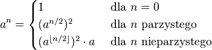

Jak pewnie zauważyłeś najważniejszym czynnikiem jest wykładnik potęgi.
Podstawa potęgi nie ma znaczenia dla algorytmu i będziemy ją oznaczać jako liczba
a.
Skupmy uwagę na wykładniku. Wykładnik
n jest liczbą naturalną i może być
albo liczbą parzystą albo nieparzystą. Rozważmy każdy przypadek z osobna:
-
Załóżmy, że n jest liczbą parzystą.
Wówczas możemy zapisać liczbę n jako n=2m,
natomiast potęge an możemy rozpisać w następujący sposób:
an = a2m = (am)2
-
Załóżmy, że n jest liczbą nieparzystą.
Wówczas liczbę n możemy zapisać jako n=2m+1,
natomiast potęge an możemy rozpisać w następujący sposób:
an = a2m+1 = (am)2⋅a
Wskazówka II
Zauważ, że na podstawie powyższych rozważań łatwo jest napisać definicję rerurencyjną:

W powyższym wzorze, w przypadku n nieparzystego użyliśmy symbolu ⌊⋅⌋, który oznacza część całkowitą.
W naszym języku programowania, aby wziąć część całkowitą wystarczy tylko n podzielić przez 2,
gdyż dzielenie w naszym języku jest całkowite.
Ponadto parzystość liczby można sprawdzić używając warunku: "n % 2 == 0".